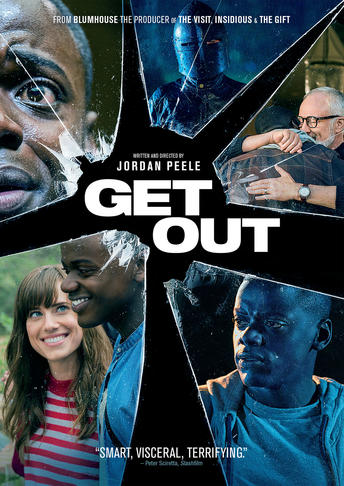

I remember being about 6 or 7 years old and having a family discussion about whether or not my brother and I were old enough to watch Gremlins. We convinced my parents that we were and I was definitely very scared by it. The thing that really stuck with me is the gremlin that explodes in the microwave.
|
||||
| Pet Sematary | Evil Dead 2 | Psycho | The Shining | Night of The Living Dead |
|
|
 | ||
| Scream | The Blackcoat's Daughter | Creepshow | Halloween | Get Out |
Slashers or Creature Features
There’s just not enough people talking about this one.
Funny, charming and all around delightful. My wife, who does not like horror, absolutely loved this one.
And finally, stay with me here- Texas Chainsaw: Massacre: the Next Generation. One of my go-to Thanksgiving time movies. It gets a lot of hate and it really isn’t good, but it is bonkers and feels like a Thanksgiving movie even though it isn’t.
Don’t Breathe. Labor Day weekend and the theater was packed. I saw it with my brother and sister. There’s a jump scene with a dog jumping into a car window and the lady next to my sister literally flew out of her seat and was flopping around on the floor like a fish. The squirming and muttered swearing during the turkey baster scene was unforgettable. That one scene had such a huge effect on everyone in the theater. It was a great movie to experience with a large crowd.